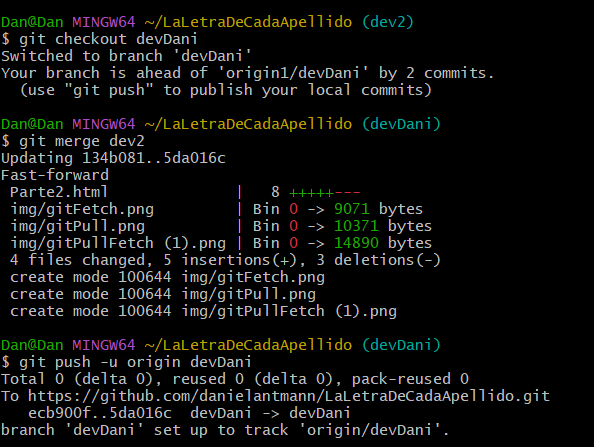

Creacion de Ramas.
Para la creacion de ramas, utilizamos el siguiente comando: git branch
Para movernos entre las ramas creadas utilizamos el siguiente comando: git checkout
< nombre
de la rama > . Para movernos entre las ramas creadas utilizamos el siguiente comando: git checkout
< nombre de la rama > .

Proceso Merge entre Ramas
Antes de fusionar la rama (branch) en la que estamos trabajando con con la principal (main) u otra,
puede interesarte subir la rama al repositorio en linea con el comando: git push -u origin
Una vez subido los cambios al reposit en linea, nos movemos de la rama en la que estamos trabajando hacia la rama con la que queremos fusionarla(merge) , con el comando: git checkout
< nombre de la rama > . Una vez subido los cambios al reposit en linea, nos movemos de la rama en la que estamos trabajando hacia la rama con la que queremos fusionarla(merge) , con el comando: git checkout
< nombre de la rama > . Una vez situados en la rama seleccionada, utilizamos
el comando: git merge < nombre de la rama > . Si en este paso no da
ningun tipo de error podemos volver a subir los nuevos cambios a nuestro repositorio en linea utilizando
nuevamente el comando: git push -u origin < nombre de la rama > . 

Diferencia entre un Pull y un Fetch.
git fetch es el comando que le dice a tu git local que recupere la última información de los metadatos
del original (aunque no hace ninguna transferencia de archivos. Es más bien como comprobar si hay algún
cambio disponible).
git pull por otro lado comprueba si existe algun cambio disponible y trae (copia) esos cambios del repositorio remoto.
git pull por otro lado comprueba si existe algun cambio disponible y trae (copia) esos cambios del repositorio remoto.
.png)
Como volver a una version anterior del proyecto
Para movernos a versiones anteriores de nuestro proyecto utilizamo el comando: git log ,
para ver el nombre(codigo) de la version a la que queremos ir, luego utilizamos el comando: git
checkout
Para volver a la ultima rama en la que estabamos eutilizampos el comando: git switch - .
< codigo de la rama a la cual deseamos ir > . Para volver a la ultima rama en la que estabamos eutilizampos el comando: git switch - .

¿Podemos añadir seguridad a a nuestro repositorio?
Se pueden utilizar varias caracteristicas para añadirle seguridad a tu repositio en linea:
1- Podemos administrar el acceso a tu repositorio, y establecer quien puede ver y modificar tu codigo.
2- Administrar el gráfico de dependencias, este se genera automáticamente para todos los repositorios públicos. Puedes optar por habilitarlo para bifurcaciones y repositorios privados. El gráfico de dependencias interpreta los archivos de manifiesto y bloqueo de un repositorio para identificar dependencias.
3- Habilitar las Dependabots alerts, Dependabot security updates y Dependabot version update.
Las Dependabots alerts, sirven para identificar una dependencia que presenta una vulnerabilidad en la gráfica de dependencias. Puedes habilitar las Dependabot alerts para cualquier repositorio.
Si tienes habilitado las Dependabots alerts, puedes habilitar las Dependabot security updates para levantar solicitudes de cambio con actualizaciones de seguridad cuando se detectan las vulnerabilidades.
Las Dependabot version uptdate sirve para actualizar automáticamente las solicitudes de cambios para mantener tus dependencias actualizadas.
4- Administrar la revisión de dependencias, esta caracteristica te permite visualizar los cambios a las dependencias en las solicitudes de cambios antes de que se fusionen con tus repositorios. 5- Configuración de Code Scannig
Puedes configurar el code scanning para identificar automáticamente vulnerabilidades y errores en el código almacenado en el repositorio
Para mas información puedes consultar el siguiente enlace: Documentacíon de seguridad de GitHub
1- Podemos administrar el acceso a tu repositorio, y establecer quien puede ver y modificar tu codigo.
2- Administrar el gráfico de dependencias, este se genera automáticamente para todos los repositorios públicos. Puedes optar por habilitarlo para bifurcaciones y repositorios privados. El gráfico de dependencias interpreta los archivos de manifiesto y bloqueo de un repositorio para identificar dependencias.
3- Habilitar las Dependabots alerts, Dependabot security updates y Dependabot version update.
Las Dependabots alerts, sirven para identificar una dependencia que presenta una vulnerabilidad en la gráfica de dependencias. Puedes habilitar las Dependabot alerts para cualquier repositorio.
Si tienes habilitado las Dependabots alerts, puedes habilitar las Dependabot security updates para levantar solicitudes de cambio con actualizaciones de seguridad cuando se detectan las vulnerabilidades.
Las Dependabot version uptdate sirve para actualizar automáticamente las solicitudes de cambios para mantener tus dependencias actualizadas.
4- Administrar la revisión de dependencias, esta caracteristica te permite visualizar los cambios a las dependencias en las solicitudes de cambios antes de que se fusionen con tus repositorios. 5- Configuración de Code Scannig
Puedes configurar el code scanning para identificar automáticamente vulnerabilidades y errores en el código almacenado en el repositorio
Para mas información puedes consultar el siguiente enlace: Documentacíon de seguridad de GitHub